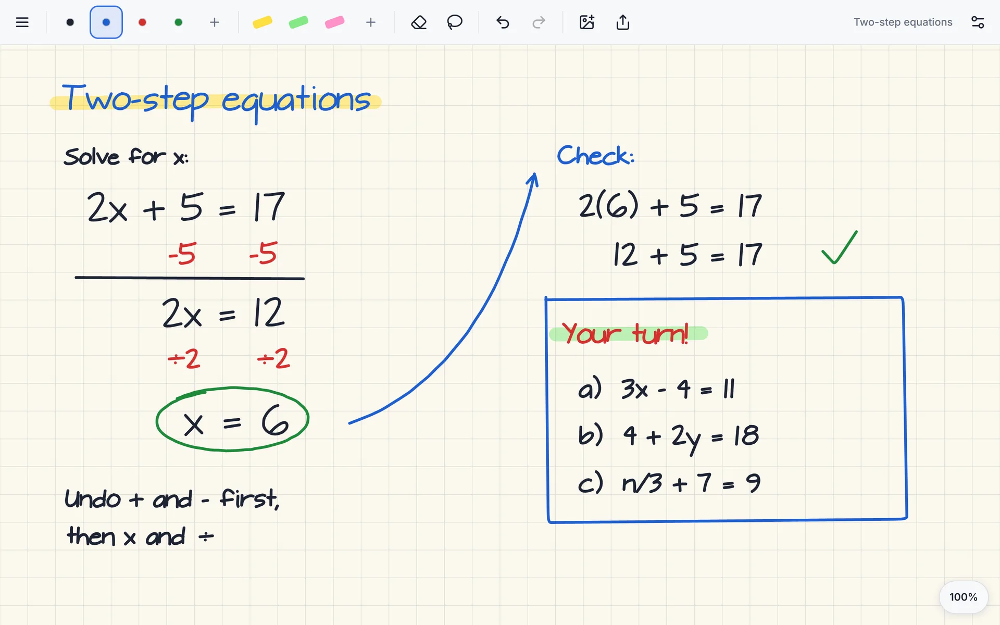
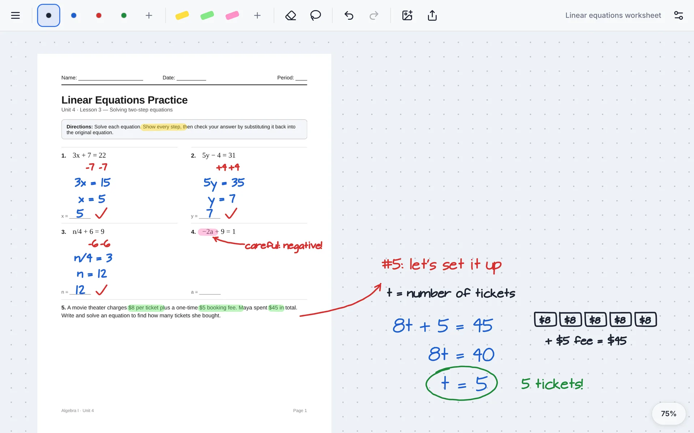
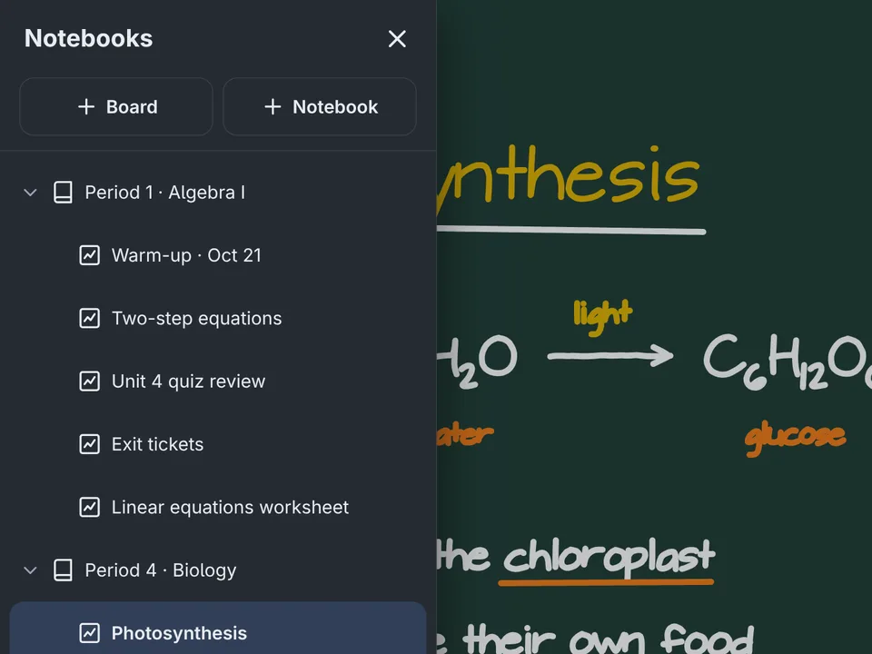
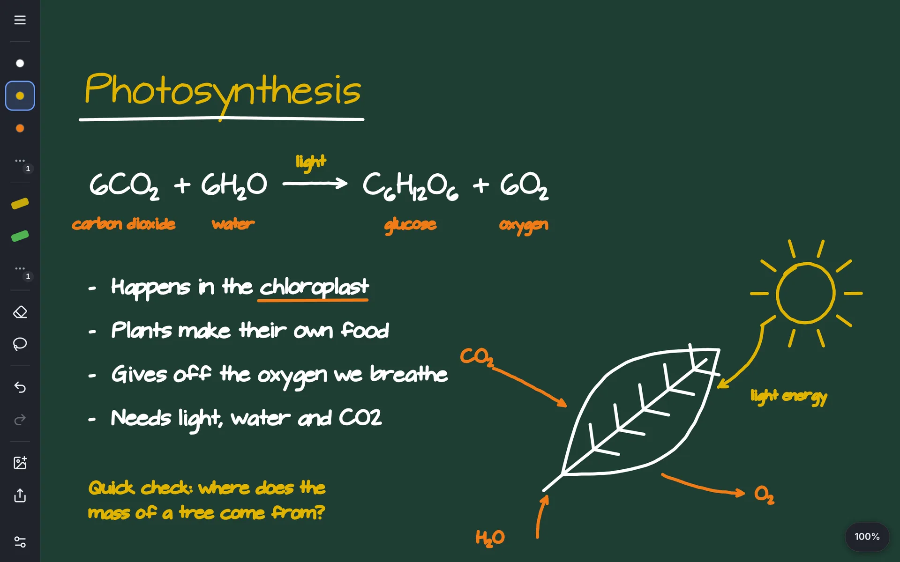
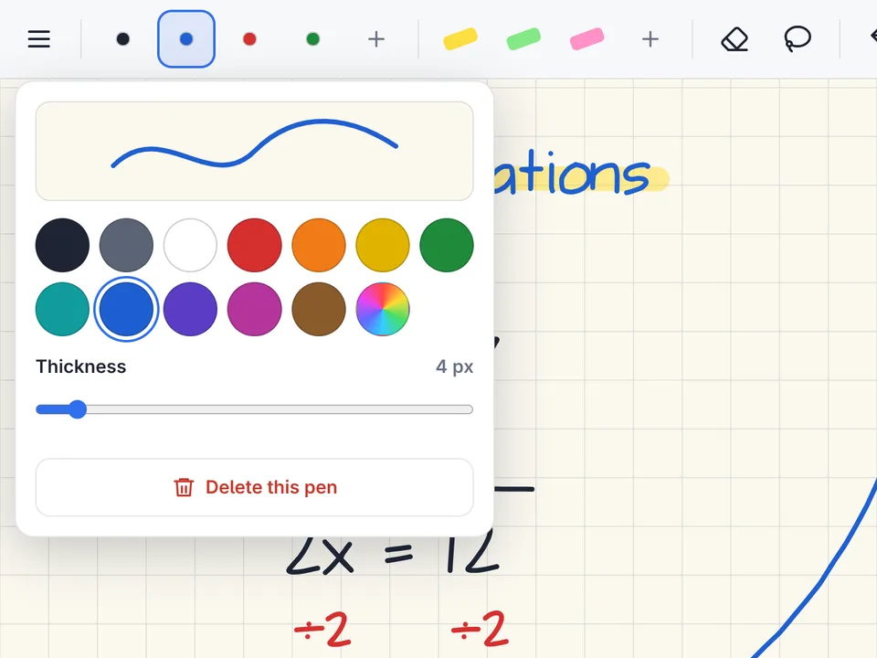
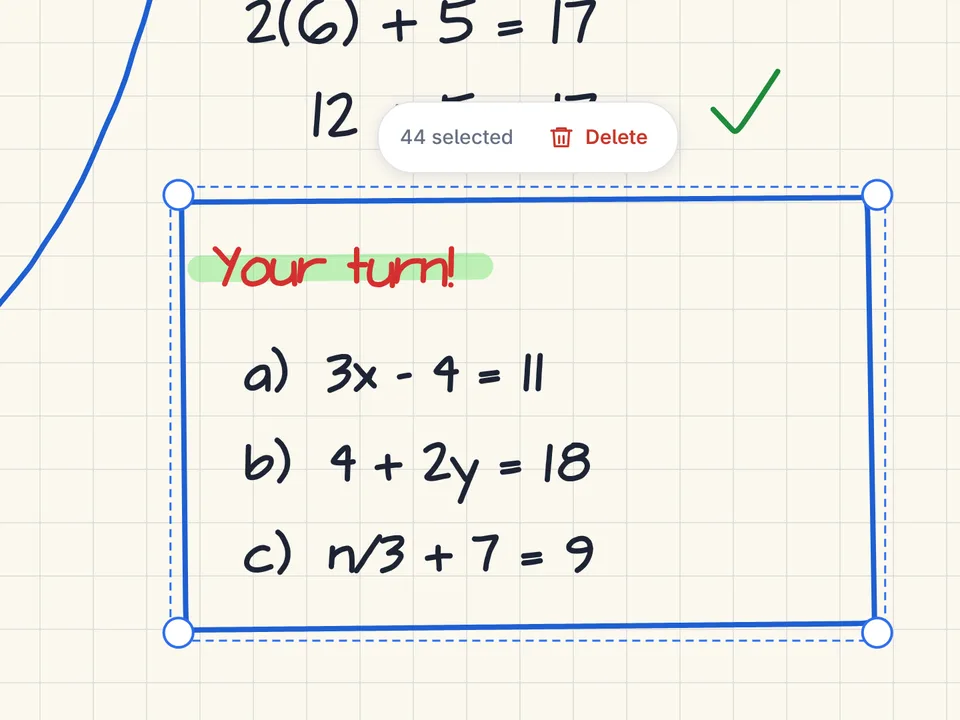
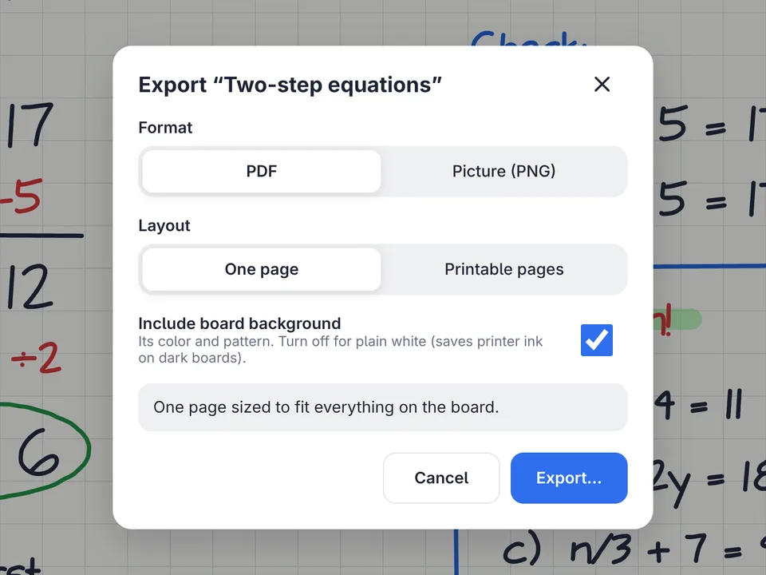
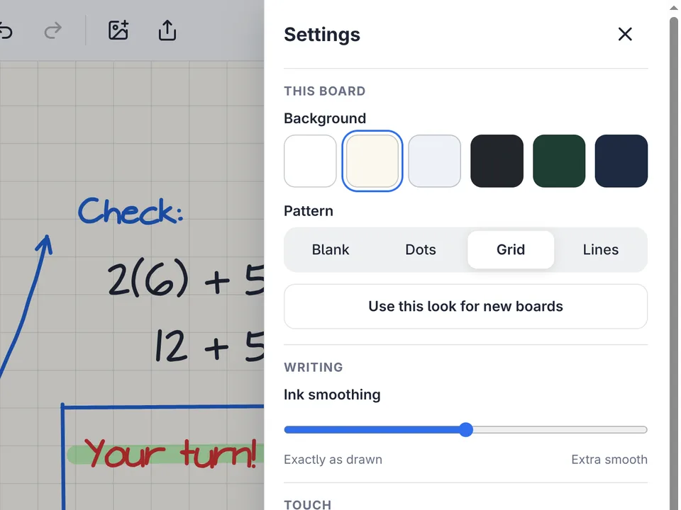

One finger writes
with whatever pen or highlighter you picked.
Free & open source · Windows and Linux
Chalkd is a whiteboard app for the touchscreen at the front of your room. Write with a finger, mark up any worksheet, and find every board right where you left it for the next class.

No trial, no premium tier, no “contact sales.” Chalkd is open source under the GPL, so it stays free.
No accounts, no logins, no student data. Open it and start writing.
Every board saves itself to your Documents folder. Copy them, back them up, or take them to another school.
Features
Print to Chalkd from Word, Google Docs, your browser, or any app with a Print button. The document opens as a new board named after it. You can also drop a PDF or picture right onto the board.

Keep a notebook for each period or subject and a board for each lesson. Everything saves as you write, and the board you were last on opens when you start Chalkd.

Give each board the background that fits the lesson: six colors, including chalkboard green, with blank, dot, grid, or lined patterns. Make any look the default for new boards.

Touch
You won’t have to walk back to the laptop. Chalkd knows how many fingers are on the board and does the right thing.
with whatever pen or highlighter you picked.
Flick it and the board glides to a stop.
whatever tool is selected. Circle some ink, then tap inside the loop to clear it all.
Two on each hand. Spread them to zoom in, bring them together to zoom out.
Prefer two fingers to erase? Swap them in Settings. Palm rejection and ink smoothing are there too, and a mouse, trackpad, or pen tablet works just as well.

Add as many pens and highlighters as you want. Tap one to use it, tap again to change its color or thickness, and slide it to reorder.

Loop around anything to select it. Drag it out of the way, pull a corner to resize, or delete it.

Export a board as a PDF or picture to post for your class. Choose one page that fits everything, or printable Letter or A4 pages.

Backgrounds, ink smoothing, palm rejection, gestures, theme, and toolbar size, all on one panel in plain language.
Even Clear Board. Ctrl+Z works too.
Paste a picture or drag files right onto the board.
Exported PDFs keep ink as vectors, so it prints crisp.
Ctrl+1 fits everything on screen, Ctrl+0 goes back to 100%.
Privacy
Chalkd has no accounts, no cloud, and no analytics. It never goes online. Your boards stay on your computer, in a folder you choose.
Download
Free forever. Latest version: 1.3.0.
Windows 10 or 11, 64-bit
Download installerInstalls for you alone, with no admin rights needed. The installer isn’t signed yet, so if Windows says “Windows protected your PC”, choose More info › Run anyway.
Portable .zip (no install; Print to Chalkd needs the installer)
Arch Linux and Omarchy
Download packageThen install it:
sudo pacman -U chalkd-1.3.0-1-x86_64.pkg.tar.zstThe package adds the Chalkd printer for you. On other distros, build from source.
Older versions, checksums, and release notes are on GitHub Releases.
Yes. There’s no paid version, no ads, and no account. Chalkd is free and open-source software under the GNU GPL (version 3 or later), so anyone can use it, share it, and check how it works.
If your computer treats the display as a touchscreen, Chalkd’s finger gestures will work on it. Chalkd also works with a mouse, trackpad, or pen tablet: the mouse draws, the scroll wheel moves the board, and Ctrl+scroll zooms.
Windows keeps three- and four-finger swipes for itself. To erase with three fingers and zoom with four, turn those off. Chalkd’s Settings › Touch has a button that opens the right Windows setting. Windows support is new, so if something doesn’t work on your hardware, please let us know.
Chalkd doesn’t collect anything. It has no accounts, no sign-in, no cloud service, and no analytics, and it never connects to the internet. Boards are files on your own computer.
In a Chalkd folder inside Documents. Each notebook is a folder and each board is a .chalkd file. You can move the Chalkd folder in Settings, for example into a folder your school already backs up or syncs.
Chalkd adds a printer named Chalkd to your computer. Print anything to it and it opens as a new board, named after the document, in the notebook you’re working in. On Linux the package adds the printer for you. On Windows, open Settings › Printing › Add the Chalkd printer… (Windows asks for admin permission once). On Windows you can also right-click a PDF and choose Send to › Chalkd.
Not yet. Chalkd runs on Windows and Linux today.
Chalkd is built by a classroom teacher who wanted a whiteboard that stays out of the way while teaching. Ideas and bug reports are welcome on GitHub.